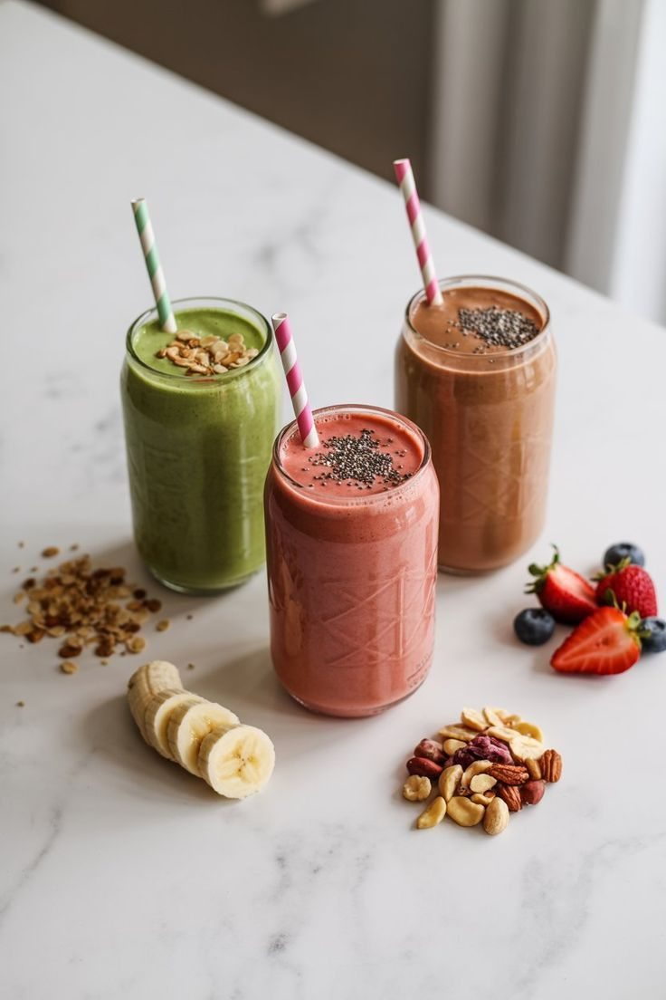
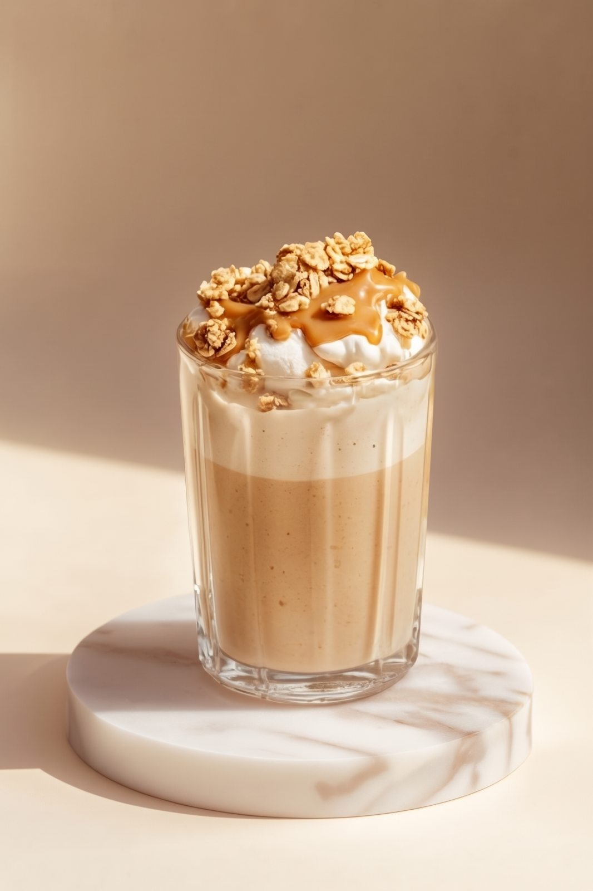
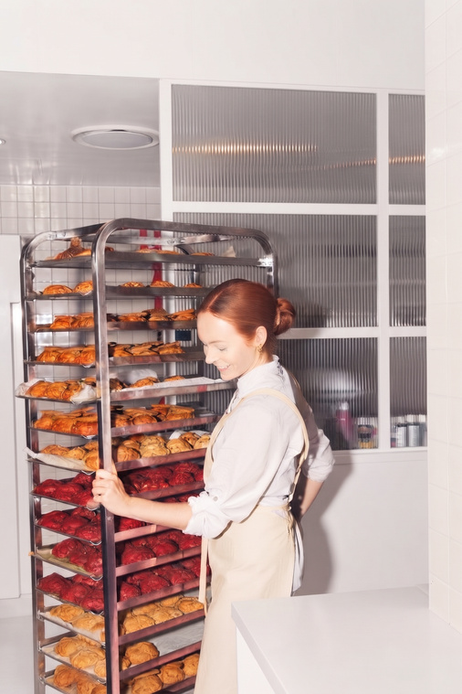
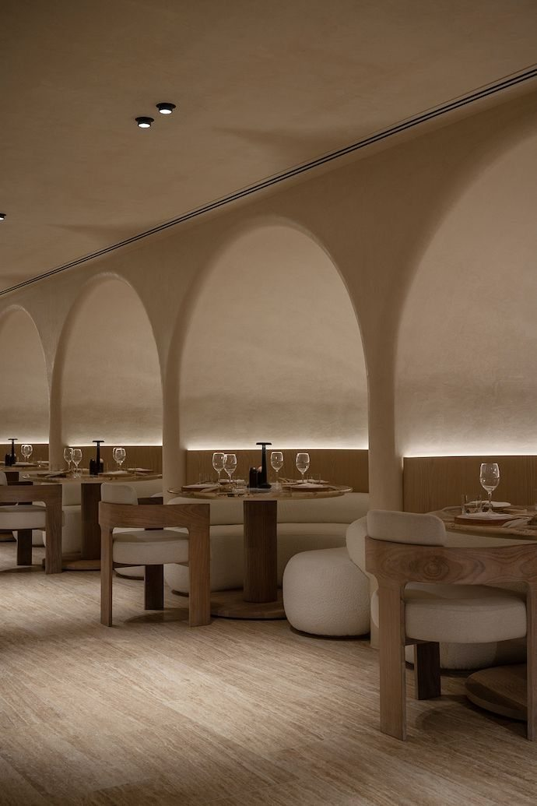
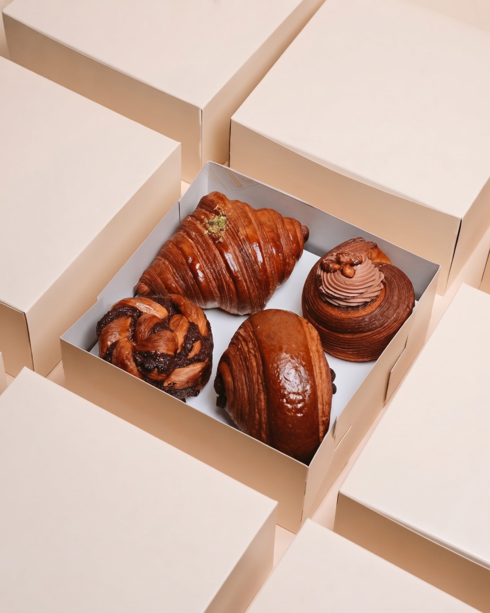
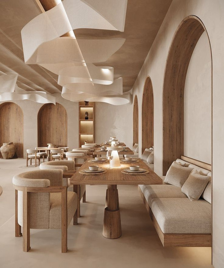
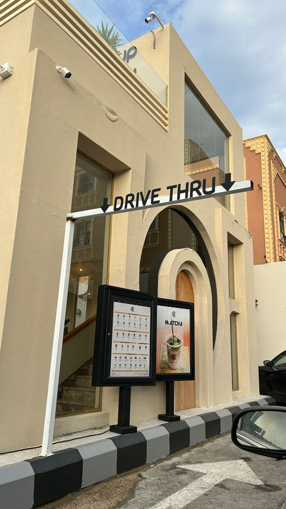
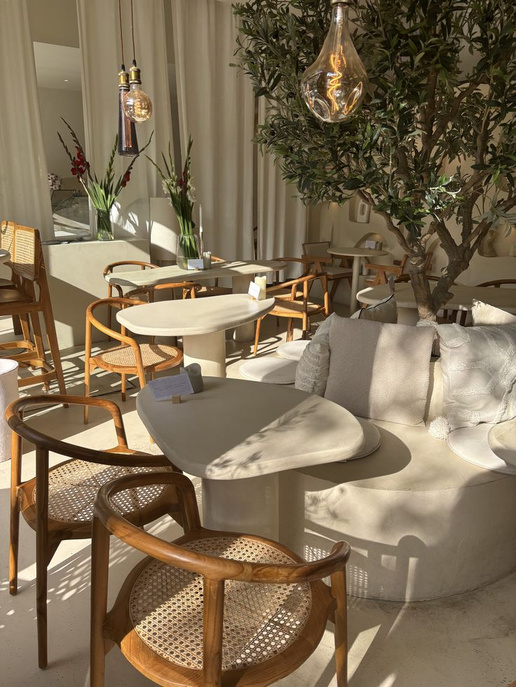

WELCOME TO BLUE LOAF
El placer de comer bien.
Repostería fit, cocina funcional y café de especialidad. Una nueva forma de disfrutar cada elección.
Explorar el menú ↗NUTRITIONALLY MINDFUL · BEAUTIFULLY MADE

MADE FOR EVERY MOMENT
THE SEASONAL EDIT
Algo nuevo para disfrutar.
Descubre los favoritos de temporada, pensados para acompañar tus días con sabor y equilibrio.


A LITTLE ABOUT US
Bienestar sin sacrificios.
En Blue Loaf creemos que disfrutar de la comida y cuidar del bienestar pueden ir de la mano. Integramos repostería fit, cocina funcional y café de especialidad en una experiencia pensada para quienes buscan equilibrio, calidad y practicidad.
Combinamos ingredientes cuidadosamente seleccionados, precisión nutricional y atención al detalle para que cada elección se disfrute con libertad y confianza.
Nuestra misión
Transformar la relación entre alimentación y bienestar a través de una propuesta gastronómica que integra repostería fit, cocina funcional y café de especialidad. Ofrecemos productos de calidad, información nutricional transparente y experiencias ágiles que permiten disfrutar de cada elección con libertad, equilibrio y confianza.
Nuestra visión
Consolidarnos como una marca referente en gastronomía funcional y estilo de vida consciente en Colombia, reconocida por integrar el disfrute gourmet, la precisión nutricional y la innovación en experiencias gastronómicas.
KNOW YOUR FOOD
Macro calculator.
Combina tus productos favoritos y conoce una estimación de sus macronutrientes.
YOUR DAILY COMBINATION
Tu selección,
en números.
0kcal estimadas
0gProteína
0gCarbohidratos
0gGrasas
ORDER AHEAD
Tu pedido, a tu ritmo.
Elige tus favoritos y prepara tu visita. Simulación de preorden para el proyecto académico.
Tu selección
Total $0
A PLACE FOR OUR FIRST ONES
The Founders Club.
Una comunidad para quienes quieren estar desde el principio. Acceso anticipado, experiencias especiales y beneficios pensados para nuestros primeros miembros.
Acceso anticipadoExperiencias exclusivasBeneficios de bienvenida
Registro demostrativo. No se cobra ni se activa una membresía real.
THE BLUE LOAF EXPERIENCE
Un espacio para cada momento.
Un lugar para disfrutar sin prisa y una opción ágil para cuando el día no se detiene.



STAY IN TOUCH
Good things ahead.
Déjanos tus datos para conocer novedades y lanzamientos de Blue Loaf.